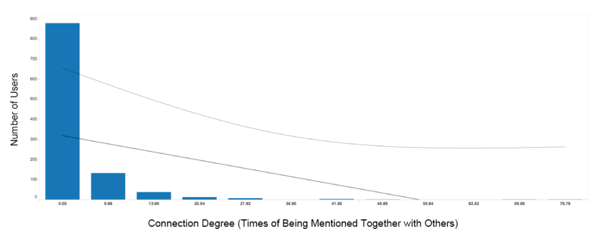
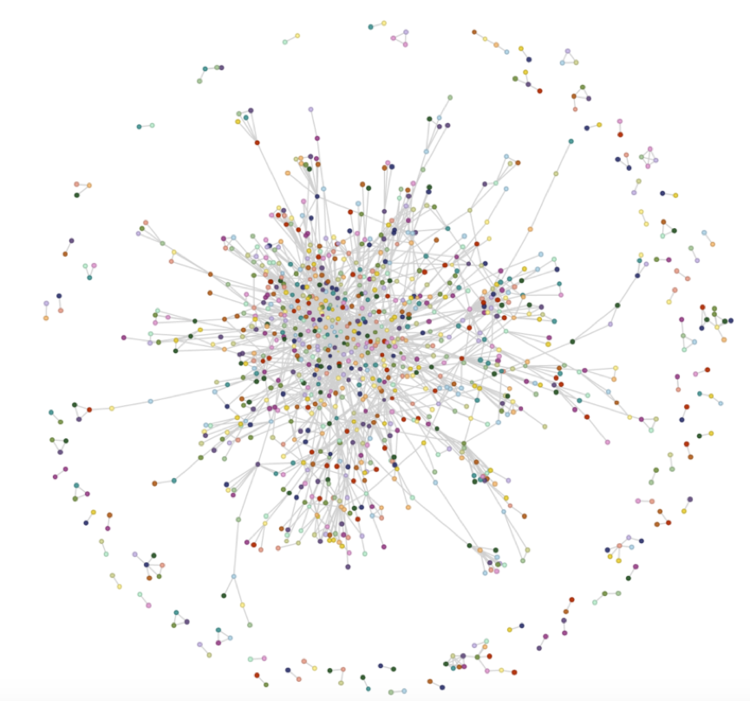

This research project explores Pitchfork's reviewer scores of 21447 indie music albums in the past ten years and around 3200 official tweets using Python, Tableau and D3 plus. The project was done in 2016. View the interactive network map ›
Type: solo project
Duration: 4 weeks
Tasks: data mining, data visualization
Who are the most popular mentioned-users and artists on Pitchfork's official twitter account? Are these artists also Pitchforks’ favorites? Do Pitchfork fans' social media presence and music opinions really get affected by this tiny web outfit? Apart from answering these questions, I also visualized Pitchfork's twitter network, which demonstrates how the artists, record labels, music festivals, and even politicians get connected together in this online indie music world.
As the most influential tastemaker on the music scene, Pitchfork offers a valuable dataset that demonstrates the indie music trends from the perspective of a professional critic. I came across Neal S. Grantham's Pitchfork album scores and accolade dataset on Github. In Neal's analysis, he did a good job demonstrating Pitchfork’s scoring system, and being skeptical about its reviewers. Discussing reviewers’ authenticity is one angle of measuring the website; finding out what its users are talking about is an equally interesting and meaningful way to review the indie music world. So I decided to put it together with social media and find out more from it.
I used the “Albums” table in Neal's dataset, which includes album’s id (unique album identifier assigned by Pitchfork), name of the album, name of the album’s artist, name of the label that produced the album, year the album was released, name of the album’s Pitchfork reviewer, score given to the album by reviewers (0.0 to 10.0 in increments of 0.1), accolade (“Best New Music” or “Best New Reissue”), review published date, and URL of Pitchfork’s review. 21447 albums are described in the dataset, and the file is updated to Jan. 16, 2016.
Based on the dataset, I created an artist dictionary by assigning albums’ information to each artist. And then I calculated the mean value of all the album scores received by each artist.
Using Twitter’s Rest API, I grabbed tweets’ profiles from Pitchfork’s twitter timeline on 162 pages. There are around 3200 tweets in all, dated from March 3, 2016 to May 26, 2016. Each tweet’s profile includes the tweet’s id, text, mentioned-users, retweet-number, and favorite-number. I add numbers of favorited and retweet together as an engagement score for every tweet.
I cleaned the data in both datasets by lowercasing all the names and striping the blank spaces and “the”. However, while having a “cleaner” name, I still keep artist’s original name for future references in pitchfork score dictionary. That is because I noticed that one artist’s name was simply disappeared after striping since the band is called “The The”. And then I further stripped the “.com” and “official” in tweet dataset.
I cleaned the data in both datasets by lowercasing all the names and striping the blank spaces and “the”. However, while having a “cleaner” name, I still keep artist’s original name for future references in pitchfork score dictionary. That is because I noticed that one artist’s name was simply disappeared after striping since the band is called “The The”. And then I further stripped the “.com” and “official” in tweet dataset.
The top five most-mentioned users by Pitchfork twitter are Radiohead, Lil Chano from from 79th, The Weeknd, Kanye West and Kendrick Lamar. All of them are artists – only Radiohead is a rock band, and the other four are all R&B/Hip Hop artists or projects. In addition, all of them have just released new singles or albums, and are currently on tour during the period this project was conducted.
Another notable fact is that Bernie Sanders ranks 8th biggest. In fact, he is also the only one among the top ten mentioned users who is not an artist.
Looking at the biggest names in this cloud, the top popular artists almost remain the same as in Figure 1. However, when we zoom in and have a glance at those smaller but extremely familiar names: Bob Dylan, The Beatles, Paul McCartney, Bruce Springsteen, Ramones… It’s impressive to see these old big names still exist in the top 50 most popular artists in 2016. Undoubtedly they cannot compete with these new artists who get along really well with social media, I would say they are truly revered artists, all aged over 70 (Paul McCartney could somehow represent The Beatles), and they devote their whole life to music - they are still on tour, playing their remarkable music for the world, and getting noticed on social media.
Apparently, Radiohead stays at the right-most side of the graph with an engagement score of more than 45K, but its average Pitchfork score is under 8. So does The Weeknd. However, most artists are not as lucky as Radiohead and The Weeknd – they only have under 2.5K engagement, while their pitchfork score can still get as high as 10 or as low as under 3. Most of them cluster between 6-9 (according to Neal, the mean score of all the Pitchfork albums is 6.95, which seems reasonable from this graph). In order to get a better understanding of the artists with twitter engagement under 2.5K, I then took logarithm of the X-Axis.
Now we can have a better understanding of an artists’ social media popularity and its Pitchfork score. I tried to find a trend line of correlation from this graph, but failed. It seems like the popularity of an artist on social media does not have much to do with professional reviewers’ opinions (Pitchfork scores). My previous hypothesis of the correlation between Pitchfork’s opinion and Twitter popularity was wrong.
#1 Degree distribution
I examined the degree distribution of Pitchfork's Twitter network by counting the number of connections each mentioned user has to others. In figure 5, the abrupt curve demonstrates that much less users are being mentioned frequently with others, and most users are being mentioned with others under 6 times. However, the curve becomes even when users are being mentioned more than 40 times, meaning that when frequency reaches around 40, the number of those few popular users no longer getting affected by the connection degree.
#2 Do users having higher connection degree also get higher Twitter engagement scores?
Yes. In figure 6, the correlation between engagement score and connection degree is obvious when both axes are on log scale. The correlation coefficient is as high as 0.66. Now we can conclude that mentioned users who has higher connection degree can normally get higher Twitter engagement scores. Thus, here's a tip for artists: let Pitchfork mention you with others frequently, so that you will be more popular on Twitter! On the other hand, Pitchfork can really manipulate audience preferences on social media, not through reviewers’ scores, but instead, mentioning artists more or less with others on Twitter can also make a difference.
#3 The network (Click here to view the site)
Most mentioned users in the center are connected tightly together as a giant component. Others are scattered sporadically around the giant component. There’s no doubt that the most centered and connected ones are still those big names, but it’s still interesting to zoom in and see whom they are getting connected.
It’s interesting to find out how tightly Bernie Sanders, a politician, is connected to the indie music world. In fact, all the artists connected with Bernie Sanders are who endorsed him. No wonder why he ranks so high in the Figure 1 that even exceeds most artists. Then I found an article on WIRE named “Bernie Sanders’ NYC Campaign Is Like Pitchfork Come to Life”. Here’s a quote: “Sanders’ campaign is like the Pitchfork homepage come to life, filled not with giant stars like Katy Perry or Beyoncé (They’re #withher), but with artists who some might say are outsiders to the musical establishment.”
Put aside Bernie Sanders’s political affiliation, just like Bernie in the presidential election in 2016, Pitchfork is also an “outsider” to some extent in the whole music establishment. Giant pop stars like Katy Perry can never be Pitchfork’s favorite. Pitchfork’s taste is more independent, more subcultural, and often with more personalities. And this is what makes Pitchfork unique but still kind of “outside” of the music world.
Now I am curious about how much Bernie Sanders and Pitchforks’ core audience overlaps. However, this is another research topic to dig into.
I consider assigning each artist a mean value of all their scores the biggest limitation, when I measure the correlation between Twitter engagement and Pitchfork scores. For example, Radiohead has 14 albums reviewed and scored on Pitchfork. 2 of them are labeled as “Best New Album”; 4 of them are labeled as “Best New Reissue”, including a first ever full score (10.0) in Pitchfork’s history. According to these records, Radiohead can be listed among Pitchfork’s favorite bands. Nevertheless, its mean score is only 7.66. On the other hand, the band The Stone Roses who has a 10.0 as its final mean score because it is only reviewed by Pitchfork once. It would be more accurate to measure Pitchfork’s opinion if I include accolades in the Pitchfork dataset.
The project only measures the tweets from Pitchfork’s timeline in the latest three months in 2016, so the Twitter scores heavily depends on timeliness. Because artists who are releasing new albums and on tours are undoubtedly getting more attentions than those who are not. On the other hand, it’s also interesting to see those president candidates in the data due to the timeliness.
The connections in the social network map are ranked randomly instead of ranked by the strength of each connection. And some names appear several times in the right bar - this is the exact times they get mentioned together. I should have merged these duplicated names and count them as strength of each connection.